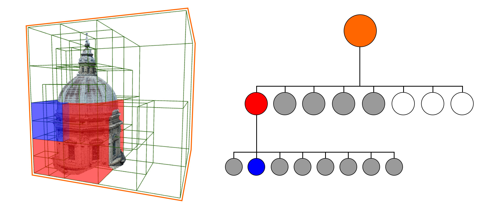

Description
In this package you can find two main algorithms:
- segment : allows you to separate the points of a 3D point cloud contained in a volume,
- orthophoto : generates the image as orthographic projection of 3D point cloud with respect to a chosen plane
Both of them has the same core function, that takes as input a point cloud Potree project and a cuboidal LAR model.
Input Point Cloud
To manage a point cloud with huge number of points we use Potree project, achieved with the tool PotreeConverter 1.7.
Potree
A Potree is a data structure used to store huge point clouds, based on octree. All details of this structure are described by Markus Schütz in his thesis.

A Potree project is a collection of files, for each node of the octree there is a file called r, followed by a numeric code indicating its position in the hierarchy, for example:
- r is the root node,
- r0 is the first child of the root node,
- r07 is the eighth child of the first child of the root node.
Due to particular way of tagging nodes, it is possible store Potree in a trie data structure, provided by Julia in module DataStructures.jl. As the usual tree data structure, a trie is made up of collections of trie node. Every trie node has three components:
- a value, where store information: in our case the path to the (LAS or LAZ) file associated;
- a map, where key is a digit and the value is trie node, used to establish the parent-child relationship;
- boolean value, indicating the end of word.
Core Function: Trie Traversal
To process points we travers trie guided by intersection between models: bounding box of current node and input volume.
Create image
TODO : raster image
Segment
TODO: salvataggio dei punti che ricadono nel modello